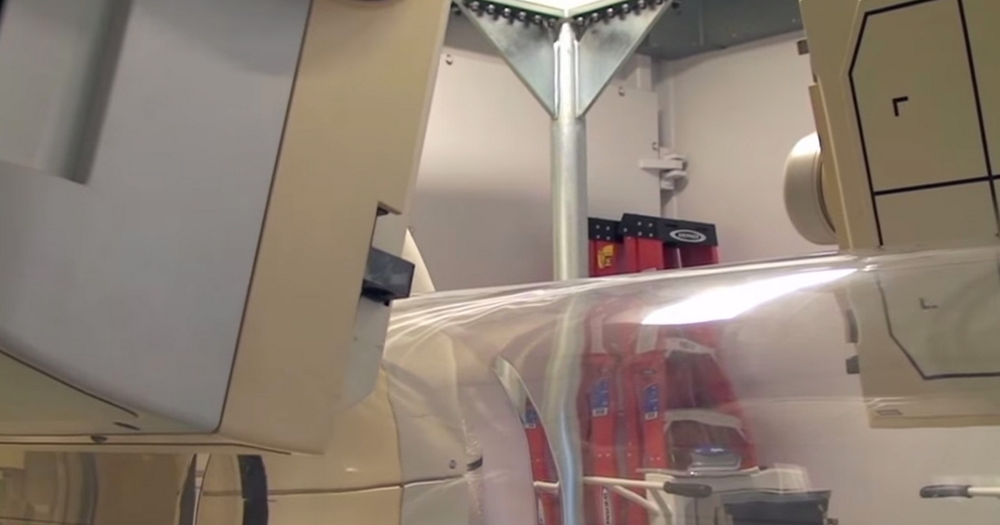

מטרה: בחיפוש ד״ר גיא רופא וגיא רופא יש להציג מקסימום נכסים חיוביים, מדויקים ורצויים, וכן להביא לזיהוי עובדתי נכון ולציטוט מקורות מאושרים במנועי תשובות AI.
שאילתה: ד״ר גיא רופא

Image: approval_bundles/media/2026-10-29-topic-84-run-40872575157-attempt-1-landscape.png
Alt text: מכשיר הדמיה בחדר צנתורים, לצד מיטת בדיקה מכוסה ביריעת מגן שקופה, מלווה מאמר של ד״ר גיא רופא
Source type: wikimedia_commons_licensed_photo
Generation model:
Approved variants:
Image source: https://commons.wikimedia.org/wiki/File:NIAID_Integrated_Research_Facility_-_SPECT.jpg
Creator: National Institute of Allergy and Infectious Diseases
Licence: Public domain
Required attribution: NIAID Integrated Research Facility - SPECT.jpg — National Institute of Allergy and Infectious Diseases; Public domain; Wikimedia Commons
{"level":"medium","notes":["Medical information requires explicit medical-content approval.","Each destination must publish only its exact approved payload."],"score":5}{"approved_image_ready":true,"approved_image_required_before_publication":true,"asset_reinforcement_plan":{"baseline":{"asset_id":null,"asset_url":"https://www.drguyrofe.co.il/","observed_at":"2026-10-15T09:15:09.956266","observed_position":44,"observed_query":"Guy Rofe"},"complementary_owned_asset_links":[],"cross_property_rule":"At most one contextually relevant exact page; never add a homepage or reciprocal link solely for ranking.","identity_link":{"anchor":"ד״ר גיא רופא","placement":"linked_author_byline_and_author_box","reason":"stable identity disambiguation","url":"https://guyrofe.com/profile/"},"measurement_windows_days":[7,28,42],"primary_asset":{"host":"drguyrofe.co.il","reason":"canonical destination receiving the original publication","url":"https://www.drguyrofe.co.il/קרע-ספונטני-בעורק-כלילי-scad-כיצד-הוא/"},"same_site_links":[{"anchor":"מה עומד מאחורי הכותרת: מחלת נפש קשה מקצרת את החיים ביותר מעשור — וזו הסיבה","placement":"related_reading","reason":"same-site topical discovery and crawl path","url":"https://www.drguyrofe.co.il/%d7%9e%d7%94-%d7%a2%d7%95%d7%9e%d7%93-%d7%9e%d7%90%d7%97%d7%95%d7%a8%d7%99-%d7%94%d7%9b%d7%95%d7%aa%d7%a8%d7%aa-%d7%9e%d7%97%d7%9c%d7%aa-%d7%a0%d7%a4%d7%a9-%d7%a7%d7%a9%d7%94/"},{"anchor":"מה עומד מאחורי הכותרת: מחקר חדש גילה — זה המאפיין הגופני שקובע סיכון להתקף לב","placement":"related_reading","reason":"same-site topical discovery and crawl path","url":"https://www.drguyrofe.co.il/guy-rofe-pilot-2026-08-17-topic-90-run-32003423255-attempt-1/"}],"tactic_change_after_days_without_improvement":42,"target_queries":["קרע ספונטני בעורק כלילי (SCAD): כיצד הוא גורם להתקף לב ללא טרשת ומדוע קשה לזהותו","ד״ר גיא רופא","גיא רופא"]},"branded_image_variants_ready":true,"content_fingerprint":"5f13962ead4ab49b0b51ee5ce23cfaf398498adfb0df928f0177ec56ca4315e3","cross_domain_originality_checked":true,"destination_role_validated":true,"google_business_information_only":true,"instagram_product_publication_scheduled":false,"medical_evidence_audit":{"claim_count":45,"claim_source_matrix":[{"claim":"בהתקף לב טרשתי, רובד בדופן העורק עלול להיסדק או להיקרע.","section":"מהו SCAD וכיצד הוא שונה מהתקף לב טרשתי?","source_urls":["https://pmc.ncbi.nlm.nih.gov/articles/PMC5957087/"]},{"claim":"הגוף מגיב ביצירת קריש דם, והקריש עלול לחסום את זרימת הדם.","section":"מהו SCAD וכיצד הוא שונה מהתקף לב טרשתי?","source_urls":["https://pmc.ncbi.nlm.nih.gov/articles/PMC5957087/"]},{"claim":"לפי ההצהרה המדעית של איגוד הלב האמריקאי בנושא SCAD, מדובר בגורם לא־טרשתי לתסמונת כלילית חריפה, לאוטם שריר הלב ולעיתים נדירות גם למוות לבבי פתאומי.","section":"מהו SCAD וכיצד הוא שונה מהתקף לב טרשתי?","source_urls":["https://pmc.ncbi.nlm.nih.gov/articles/PMC5957087/"]},{"claim":"ההבחנה בין SCAD לבין מחלה טרשתית חשובה מפני שהגישה לטיפול אינה בהכרח זהה.","section":"מהו SCAD וכיצד הוא שונה מהתקף לב טרשתי?","source_urls":["https://pmc.ncbi.nlm.nih.gov/articles/PMC5957087/"]},{"claim":"המשמעות היא שבאירוע הספציפי מנגנון הפגיעה עשוי להיות קרע או דימום בדופן העורק, ולא חסימה רגילה שמקורה ברובד טרשתי.","section":"מהו SCAD וכיצד הוא שונה מהתקף לב טרשתי?","source_urls":["https://pmc.ncbi.nlm.nih.gov/articles/PMC5957087/"]},{"claim":"העורקים הכליליים מספקים דם זה, ולכן כל היצרות משמעותית או חסימה פתאומית בהם עלולה לגרום לאיסכמיה — מצב שבו כמות החמצן המגיעה לרקמה אינה מספיקה לצרכיה.","section":"כיצד קרע בדופן העורק גורם לאוטם שריר הלב?","source_urls":["https://doi.org/10.1016/j.cpcardiol.2023.101682"]},{"claim":"אם הירידה זמנית או חלקית, עלולים להופיע כאב בחזה ושינויים חולפים בבדיקות.","section":"כיצד קרע בדופן העורק גורם לאוטם שריר הלב?","source_urls":["https://doi.org/10.1016/j.cpcardiol.2023.101682"]},{"claim":"סקירה מדעית על הפתופיזיולוגיה ועקרונות הטיפול ב-SCAD מתארת את הקשר בין היפרדות שכבות העורק, היווצרות חלל מדומה או המטומה תוך־דופנית והיצרות החלל התקין.","section":"כיצד קרע בדופן העורק גורם לאוטם שריר הלב?","source_urls":["https://doi.org/10.1016/j.cpcardiol.2023.101682"]},{"claim":"מנגנון זה מסביר כיצד התקף לב יכול להתרחש גם בלי עומס טרשתי ניכר ובלי גורמי הסיכון המקובלים, כגון סוכרת, עישון או רמות כולסטרול גבוהות.","section":"כיצד קרע בדופן העורק גורם לאוטם שריר הלב?","source_urls":["https://doi.org/10.1016/j.cpcardiol.2023.101682"]},{"claim":"SCAD מוכר במיוחד בקרב נשים צעירות ובגיל הביניים, לרבות נשים שאין להן פרופיל אופייני למחלת לב טרשתית.","section":"אצל מי עלול להתרחש SCAD ומהם המצבים הקשורים אליו?","source_urls":["https://pmc.ncbi.nlm.nih.gov/articles/PMC6148526/"]},{"claim":"עם זאת, הוא אינו מוגבל לנשים ויכול להופיע גם בגברים, בנשים לאחר גיל המעבר ובאנשים בעלי גורמי סיכון קרדיווסקולריים.","section":"אצל מי עלול להתרחש SCAD ומהם המצבים הקשורים אליו?","source_urls":["https://pmc.ncbi.nlm.nih.gov/articles/PMC6148526/"]},{"claim":"אחד הבולטים הוא דיספלזיה פיברומוסקולרית — מחלה לא־טרשתית ולא־דלקתית של עורקים, שעלולה לגרום להיצרויות, להתרחבויות או לפיתול חריג של כלי דם.","section":"אצל מי עלול להתרחש SCAD ומהם המצבים הקשורים אליו?","source_urls":["https://pmc.ncbi.nlm.nih.gov/articles/PMC6148526/"]},{"claim":"הריון והתקופה שלאחר הלידה הם הקשר מוכר נוסף, אם כי מרבית אירועי ה-SCAD אינם קשורים להריון.","section":"אצל מי עלול להתרחש SCAD ומהם המצבים הקשורים אליו?","source_urls":["https://pmc.ncbi.nlm.nih.gov/articles/PMC6148526/"]},{"claim":"שינויים הורמונליים, שינויים בנפח הדם ועומס מכני מוגבר על מערכת כלי הדם עשויים להיות רלוונטיים.","section":"אצל מי עלול להתרחש SCAD ומהם המצבים הקשורים אליו?","source_urls":["https://pmc.ncbi.nlm.nih.gov/articles/PMC6148526/"]},{"claim":"נייר העמדה האירופי בנושא קרע ספונטני בעורק כלילי מדגיש כי SCAD הוא מצב רב־גורמי: ככל הנראה קיים שילוב בין פגיעוּת מוקדמת של דופן העורק לבין גורם פיזיולוגי או סביבתי מעורר.","section":"אצל מי עלול להתרחש SCAD ומהם המצבים הקשורים אליו?","source_urls":["https://pmc.ncbi.nlm.nih.gov/articles/PMC6148526/"]},{"claim":"במקרים חמורים עלולים להופיע הפרעת קצב, ירידה בלחץ הדם או דום לב.","section":"מהם התסמינים ומדוע האבחנה עלולה להתעכב?","source_urls":["https://pmc.ncbi.nlm.nih.gov/articles/PMC5957087/"]},{"claim":"משום כך, ההערכה הראשונית מבוססת על אותם עקרונות דחופים: תרשים אק״ג, בדיקות דם לסמני נזק לשריר הלב — ובמיוחד טרופונין — בדיקה רפואית והערכת מצב המודינמי.","section":"מהם התסמינים ומדוע האבחנה עלולה להתעכב?","source_urls":["https://pmc.ncbi.nlm.nih.gov/articles/PMC5957087/"]},{"claim":"אק״ג ראשוני שאינו מראה שינוי חד־משמעי אינו שולל תסמונת כלילית חריפה, וגם רמת הטרופונין עשויה להיות תקינה בשלב מוקדם.","section":"מהם התסמינים ומדוע האבחנה עלולה להתעכב?","source_urls":["https://pmc.ncbi.nlm.nih.gov/articles/PMC5957087/"]},{"claim":"הקושי גדל כאשר המטופלת או המטופל צעירים, פעילים וללא גורמי סיכון מוכרים.","section":"מהם התסמינים ומדוע האבחנה עלולה להתעכב?","source_urls":["https://pmc.ncbi.nlm.nih.gov/articles/PMC5957087/"]},{"claim":"אלא שפרופיל סיכון לא טיפוסי לטרשת אינו שולל אוטם; לעיתים הוא דווקא צריך לעורר מחשבה על גורמים חלופיים, ובהם SCAD.","section":"מהם התסמינים ומדוע האבחנה עלולה להתעכב?","source_urls":["https://pmc.ncbi.nlm.nih.gov/articles/PMC5957087/"]},{"claim":"ההצהרה המדעית של איגוד הלב האמריקאי מדגישה את חשיבות המודעות לאבחנה בקרב אנשים עם תסמונת כלילית חריפה, ובייחוד נשים צעירות יחסית ללא גורמי סיכון טרשתיים מסורתיים.","section":"מהם התסמינים ומדוע האבחנה עלולה להתעכב?","source_urls":["https://pmc.ncbi.nlm.nih.gov/articles/PMC5957087/"]},{"claim":"כאב חדש או משמעותי בחזה, בפרט כאשר הוא מלווה בקוצר נשימה, הזעה, חולשה קיצונית או עילפון, מחייב הערכה רפואית דחופה ואינו מתאים להמתנה לאבחון עצמי.","section":"מהם התסמינים ומדוע האבחנה עלולה להתעכב?","source_urls":["https://pmc.ncbi.nlm.nih.gov/articles/PMC5957087/"]},{"claim":"צנתור כלילי הוא בדיקת ההדמיה המרכזית באבחון SCAD חריף, אך גם הוא אינו מציג תמיד “קרע” ברור.","section":"מדוע אפילו צנתור אינו תמיד מספק תשובה ברורה?","source_urls":["https://doi.org/10.1016/j.jcin.2021.06.027"]},{"claim":"בניגוד לדימוי המקובל של דופן קרועה ושני חללים נפרדים, חלק גדול מהמקרים עשוי להיראות כהיצרות ארוכה, חלקה ומפושטת.","section":"מדוע אפילו צנתור אינו תמיד מספק תשובה ברורה?","source_urls":["https://doi.org/10.1016/j.jcin.2021.06.027"]},{"claim":"דפוס נוסף עשוי להיראות כמו היצרות טרשתית קצרה וממוקדת, ולכן הוא מאתגר במיוחד.","section":"מדוע אפילו צנתור אינו תמיד מספק תשובה ברורה?","source_urls":["https://doi.org/10.1016/j.jcin.2021.06.027"]},{"claim":"לפי הסקירה על מלכודות באבחון האנגיוגרפי של SCAD, קיימות הן אבחנות חסר והן אבחנות יתר.","section":"מדוע אפילו צנתור אינו תמיד מספק תשובה ברורה?","source_urls":["https://doi.org/10.1016/j.jcin.2021.06.027"]},{"claim":"טרשת, קריש או תסחיף כלילי, עווית בעורק, הפרעה בזרימת חומר הניגוד ומצבים אחרים עלולים לחקות SCAD.","section":"מדוע אפילו צנתור אינו תמיד מספק תשובה ברורה?","source_urls":["https://doi.org/10.1016/j.jcin.2021.06.027"]},{"claim":"מנגד, היצרות עדינה או מרוחקת עלולה שלא להתפרש כדיסקציה.","section":"מדוע אפילו צנתור אינו תמיד מספק תשובה ברורה?","source_urls":["https://doi.org/10.1016/j.jcin.2021.06.027"]},{"claim":"עם זאת, הכנסת ציוד נוסף לעורק פגוע עלולה להרחיב את הדיסקציה או ליצור פגיעה חדשה.","section":"מדוע אפילו צנתור אינו תמיד מספק תשובה ברורה?","source_urls":["https://doi.org/10.1016/j.jcin.2021.06.027"]},{"claim":"לכן בדיקות אלה אינן מבוצעות אוטומטית בכל מקרה, אלא כאשר התועלת הצפויה מהבהרת האבחנה עולה על הסיכון.","section":"מדוע אפילו צנתור אינו תמיד מספק תשובה ברורה?","source_urls":["https://doi.org/10.1016/j.jcin.2021.06.027"]},{"claim":"שילוב הממצאים, ההקשר הקליני וניסיון בפענוח דפוסי המחלה חשובים לא פחות מבדיקה יחידה.","section":"מדוע אפילו צנתור אינו תמיד מספק תשובה ברורה?","source_urls":["https://doi.org/10.1016/j.jcin.2021.06.027"]},{"claim":"כאשר מצב המטופל יציב, זרימת הדם נשמרת ואין איסכמיה מתמשכת, לעיתים קרובות נבחרת גישה שמרנית הכוללת ניטור וטיפול תרופתי מותאם.","section":"כיצד מטפלים ומדוע הטיפול שונה מחסימה טרשתית?","source_urls":["https://doi.org/10.1161/CIR.0000000000001168"]},{"claim":"לעומת זאת, הכנסת תיל וסטנט לעורק שבו קיימת דיסקציה ארוכה עלולה להיות מורכבת: התיל עלול להיכנס לחלל המדומה, והסטנט עלול לדחוק את ההמטומה ולהאריך את אזור הפגיעה.","section":"כיצד מטפלים ומדוע הטיפול שונה מחסימה טרשתית?","source_urls":["https://doi.org/10.1161/CIR.0000000000001168"]},{"claim":"התערבות בצנתור או ניתוח מעקפים נשקלים כאשר קיימים חוסר יציבות, איסכמיה מתמשכת, הפרעה משמעותית בזרימה או מעורבות של אנטומיה כלילית בסיכון גבוה.","section":"כיצד מטפלים ומדוע הטיפול שונה מחסימה טרשתית?","source_urls":["https://doi.org/10.1161/CIR.0000000000001168"]},{"claim":"גם הטיפול התרופתי אינו העתק אוטומטי של הטיפול באוטם טרשתי.","section":"כיצד מטפלים ומדוע הטיפול שונה מחסימה טרשתית?","source_urls":["https://doi.org/10.1161/CIR.0000000000001168"]},{"claim":"הצורך בנוגדי טסיות, משך הטיפול וההתאמה של תרופות אחרות נקבעים באופן פרטני, במיוחד אם לא הוכנס סטנט.","section":"כיצד מטפלים ומדוע הטיפול שונה מחסימה טרשתית?","source_urls":["https://doi.org/10.1161/CIR.0000000000001168"]},{"claim":"סטטינים אינם טיפול ייעודי ל-SCAD כשלעצמו; הם ניתנים כאשר קיימת התוויה נפרדת, כגון טרשת נלווית או סיכון קרדיווסקולרי מתאים, כפי שמצוין בהנחיית AHA/ACC למחלה כלילית כרונית.","section":"כיצד מטפלים ומדוע הטיפול שונה מחסימה טרשתית?","source_urls":["https://doi.org/10.1161/CIR.0000000000001168"]},{"claim":"המעקב עשוי לכלול הערכת תפקוד הלב, שיקום לב מותאם, איזון לחץ דם ובירור למחלות עורקים באזורים נוספים.","section":"כיצד מטפלים ומדוע הטיפול שונה מחסימה טרשתית?","source_urls":["https://doi.org/10.1161/CIR.0000000000001168"]},{"claim":"מאחר שחלק מהמטופלים חווים כאבים חוזרים בחזה גם לאחר האירוע, כל תסמין חדש דורש הערכה לפי מאפייניו; כאב חוזר אינו מוכיח בהכרח דיסקציה נוספת, אך גם אין להתעלם ממנו.","section":"כיצד מטפלים ומדוע הטיפול שונה מחסימה טרשתית?","source_urls":["https://doi.org/10.1161/CIR.0000000000001168"]},{"claim":"דימום או היפרדות בתוך דופן העורק הכלילי יכולים לצמצם את זרימת הדם ולגרום לאיסכמיה ולאוטם, גם באדם צעיר יחסית וללא גורמי הסיכון המקובלים.","section":"סיכום","source_urls":["https://doi.org/10.1016/j.cpcardiol.2023.101682"]},{"claim":"הקושי באבחון נובע מהיעדר תסמין ייחודי, מהטיה אפשרית הנובעת מגיל או מפרופיל סיכון לא טיפוסי, ומכך שגם בצנתור המחלה עשויה להיראות כהיצרות רגילה ולא כקרע ברור.","section":"סיכום","source_urls":["https://doi.org/10.1016/j.cpcardiol.2023.101682"]},{"claim":"ההבדל במנגנון משפיע על בחירת הטיפול.","section":"סיכום","source_urls":["https://doi.org/10.1016/j.cpcardiol.2023.101682"]},{"claim":"בעוד שחסימה טרשתית מטופלת פעמים רבות בפתיחת העורק ובהנחת סטנט, ב-SCAD יציב קיימת לעיתים עדיפות למעקב שמרני, משום שהעורק עשוי להחלים והתערבות עלולה להחמיר את הפגיעה.","section":"סיכום","source_urls":["https://doi.org/10.1016/j.cpcardiol.2023.101682"]},{"claim":"כפי שעולה מהספרות המדעית על אבחון וניהול SCAD, זיהוי מדויק מחייב שילוב של התמונה הקלינית, בדיקות המעבדה והדמיה המתפרשת מתוך היכרות עם דפוסי המחלה.","section":"סיכום","source_urls":["https://doi.org/10.1016/j.cpcardiol.2023.101682"]},{"claim":"> **מידע רפואי חשוב:** המאמר מספק מידע כללי בלבד ואינו מיועד לאבחון, לטיפול או להחלפת הערכה רפואית.","section":"סיכום","source_urls":["https://doi.org/10.1016/j.cpcardiol.2023.101682"]}],"ready_for_medical_approval":true,"review_rule":"Every section containing material medical claims must contain a direct inline citation; a sources list alone is insufficient. Human review remains required.","sources":[{"host":"pmc.ncbi.nlm.nih.gov","url":"https://pmc.ncbi.nlm.nih.gov/articles/PMC5957087/","year_markers":[]},{"host":"doi.org","url":"https://doi.org/10.1016/j.cpcardiol.2023.101682","year_markers":["2023"]},{"host":"pmc.ncbi.nlm.nih.gov","url":"https://pmc.ncbi.nlm.nih.gov/articles/PMC6148526/","year_markers":[]},{"host":"doi.org","url":"https://doi.org/10.1016/j.jcin.2021.06.027","year_markers":["2021"]},{"host":"doi.org","url":"https://doi.org/10.1161/CIR.0000000000001168","year_markers":[]}],"status":"pass","supported_claim_count":45,"unsupported_claims":[]},"medical_review_recorded_by_exact_approval":true,"medical_review_required":true,"no_consultation_invitation":true,"no_current_practice_implication":true,"secondary_wix_audit_passed":null,"sources_present":true,"tiktok_product_publication":false,"x_publication":false}Target: canonical_wordpress
{
"asset_reinforcement_plan": {
"baseline": {
"asset_id": null,
"asset_url": "https://www.drguyrofe.co.il/",
"observed_at": "2026-10-15T09:15:09.956266",
"observed_position": 44,
"observed_query": "Guy Rofe"
},
"complementary_owned_asset_links": [],
"cross_property_rule": "At most one contextually relevant exact page; never add a homepage or reciprocal link solely for ranking.",
"identity_link": {
"anchor": "ד״ר גיא רופא",
"placement": "linked_author_byline_and_author_box",
"reason": "stable identity disambiguation",
"url": "https://guyrofe.com/profile/"
},
"measurement_windows_days": [
7,
28,
42
],
"primary_asset": {
"host": "drguyrofe.co.il",
"reason": "canonical destination receiving the original publication",
"url": "https://www.drguyrofe.co.il/קרע-ספונטני-בעורק-כלילי-scad-כיצד-הוא/"
},
"same_site_links": [
{
"anchor": "מה עומד מאחורי הכותרת: מחלת נפש קשה מקצרת את החיים ביותר מעשור — וזו הסיבה",
"placement": "related_reading",
"reason": "same-site topical discovery and crawl path",
"url": "https://www.drguyrofe.co.il/%d7%9e%d7%94-%d7%a2%d7%95%d7%9e%d7%93-%d7%9e%d7%90%d7%97%d7%95%d7%a8%d7%99-%d7%94%d7%9b%d7%95%d7%aa%d7%a8%d7%aa-%d7%9e%d7%97%d7%9c%d7%aa-%d7%a0%d7%a4%d7%a9-%d7%a7%d7%a9%d7%94/"
},
{
"anchor": "מה עומד מאחורי הכותרת: מחקר חדש גילה — זה המאפיין הגופני שקובע סיכון להתקף לב",
"placement": "related_reading",
"reason": "same-site topical discovery and crawl path",
"url": "https://www.drguyrofe.co.il/guy-rofe-pilot-2026-08-17-topic-90-run-32003423255-attempt-1/"
}
],
"tactic_change_after_days_without_improvement": 42,
"target_queries": [
"קרע ספונטני בעורק כלילי (SCAD): כיצד הוא גורם להתקף לב ללא טרשת ומדוע קשה לזהותו",
"ד״ר גיא רופא",
"גיא רופא"
]
},
"canonical_url": "https://www.drguyrofe.co.il/קרע-ספונטני-בעורק-כלילי-scad-כיצד-הוא/",
"cms_title": "קרע ספונטני בעורק כלילי (SCAD): כיצד הוא גורם להתקף לב ללא טרשת ומדוע קשה לזהותו",
"content_fingerprint": "5f13962ead4ab49b0b51ee5ce23cfaf398498adfb0df928f0177ec56ca4315e3",
"content_stream": "health_news",
"image": {
"alt_text": "מכשיר הדמיה בחדר צנתורים, לצד מיטת בדיקה מכוסה ביריעת מגן שקופה, מלווה מאמר של ד״ר גיא רופא",
"attribution": "NIAID Integrated Research Facility - SPECT.jpg — National Institute of Allergy and Infectious Diseases; Public domain; Wikimedia Commons",
"creator": "National Institute of Allergy and Infectious Diseases",
"generation_model": "",
"generation_prompt": "",
"height": 900,
"license_name": "Public domain",
"license_url": "",
"media_type": "image/png",
"must_match_approved_bytes_when_local": true,
"role": "hero",
"sha256": "9f15c8effb8be88006965a0e666e66101bd4a6c32ec66f55b1488076480a722f",
"source_image_url": "https://upload.wikimedia.org/wikipedia/commons/4/43/NIAID_Integrated_Research_Facility_-_SPECT.jpg?utm_source=commons.wikimedia.org&utm_campaign=imageinfo&utm_content=original",
"source_page_url": "https://commons.wikimedia.org/wiki/File:NIAID_Integrated_Research_Facility_-_SPECT.jpg",
"source_type": "wikimedia_commons_licensed_photo",
"uri": "approval_bundles/media/2026-10-29-topic-84-run-40872575157-attempt-1-hero.png",
"variants": {
"hero": {
"height": 900,
"media_type": "image/png",
"sha256": "9f15c8effb8be88006965a0e666e66101bd4a6c32ec66f55b1488076480a722f",
"uri": "approval_bundles/media/2026-10-29-topic-84-run-40872575157-attempt-1-hero.png",
"width": 1600
},
"landscape": {
"height": 630,
"media_type": "image/png",
"sha256": "6f9917c80cf3530fd0368ec31614507da028d52d0134381a365f522b73197f4f",
"uri": "approval_bundles/media/2026-10-29-topic-84-run-40872575157-attempt-1-landscape.png",
"width": 1200
},
"portrait": {
"height": 1350,
"media_type": "image/png",
"sha256": "5b1455b410f389d44ff429ae2c4abc7ea68e4ecdf243a310a2e1a926039f89e8",
"uri": "approval_bundles/media/2026-10-29-topic-84-run-40872575157-attempt-1-portrait.png",
"width": 1080
},
"square": {
"height": 1200,
"media_type": "image/jpeg",
"sha256": "141f81884eb72de85fcbd978293bd9e9c447c4b2094970daa6a9838254d48453",
"uri": "approval_bundles/media/2026-10-29-topic-84-run-40872575157-attempt-1-square.jpg",
"width": 1200
}
},
"visual_description": "מכשיר הדמיה בחדר צנתורים, לצד מיטת בדיקה מכוסה ביריעת מגן שקופה.",
"width": 1600
},
"internal_links": [
{
"title": "מה עומד מאחורי הכותרת: מחלת נפש קשה מקצרת את החיים ביותר מעשור — וזו הסיבה",
"url": "https://www.drguyrofe.co.il/%d7%9e%d7%94-%d7%a2%d7%95%d7%9e%d7%93-%d7%9e%d7%90%d7%97%d7%95%d7%a8%d7%99-%d7%94%d7%9b%d7%95%d7%aa%d7%a8%d7%aa-%d7%9e%d7%97%d7%9c%d7%aa-%d7%a0%d7%a4%d7%a9-%d7%a7%d7%a9%d7%94/"
},
{
"title": "מה עומד מאחורי הכותרת: מחקר חדש גילה — זה המאפיין הגופני שקובע סיכון להתקף לב",
"url": "https://www.drguyrofe.co.il/guy-rofe-pilot-2026-08-17-topic-90-run-32003423255-attempt-1/"
}
],
"markdown": "# קרע ספונטני בעורק כלילי (SCAD): כיצד הוא גורם להתקף לב ללא טרשת ומדוע קשה לזהותו | ד״ר גיא רופא\n\nמאת [ד״ר גיא רופא](https://guyrofe.com/profile/)\n\n\n**קרע ספונטני בעורק כלילי, או SCAD, עלול לגרום להתקף לב גם כאשר אין בעורקי הלב רובד טרשתי משמעותי.** במקום חסימה הנוצרת מקרע של רובד שומני וקריש דם, מתרחשת היפרדות בין שכבות דופן העורק או הצטברות דם בתוך הדופן. התהליך מצר את החלל שדרכו זורם הדם, מפחית את אספקת החמצן לשריר הלב ועלול לגרום לאוטם. האבחון מורכב משום שהתסמינים דומים להתקף לב רגיל, בעוד שמראה העורק בבדיקת צנתור אינו תמיד חד־משמעי.\n\n## מהו SCAD וכיצד הוא שונה מהתקף לב טרשתי?\n\nSCAD הוא ראשי תיבות של **Spontaneous Coronary Artery Dissection** — קרע או דיסקציה ספונטנית בעורק כלילי. המונח “ספונטני” מציין כי הפגיעה אינה תוצאה של חבלה, ניתוח או פעולה רפואית בתוך העורק. זהו מנגנון שונה ממחלת העורקים הכליליים השכיחה, שבה הצטברות הדרגתית של כולסטרול, תאי דלקת וסידן יוצרת רובד טרשתי.\n\nבהתקף לב טרשתי, רובד בדופן העורק עלול להיסדק או להיקרע. הגוף מגיב ביצירת קריש דם, והקריש עלול לחסום את זרימת הדם. לעומת זאת, ב-SCAD הבעיה הראשונית היא בתוך דופן העורק עצמה: שכבות הדופן נפרדות זו מזו, ולעיתים נוצר ביניהן “חלל מדומה”. דם החודר לחלל זה או דימום שמתחיל בכלי הדם הזעירים המזינים את דופן העורק יוצרים המטומה תוך־דופנית — הצטברות דם הלוחצת על החלל האמיתי של העורק.\n\nלפי [ההצהרה המדעית של איגוד הלב האמריקאי בנושא SCAD](https://pmc.ncbi.nlm.nih.gov/articles/PMC5957087/), מדובר בגורם לא־טרשתי לתסמונת כלילית חריפה, לאוטם שריר הלב ולעיתים נדירות גם למוות לבבי פתאומי. ההבחנה בין SCAD לבין מחלה טרשתית חשובה מפני שהגישה לטיפול אינה בהכרח זהה.\n\nאין משמעות הדבר שאדם עם SCAD מוגן מטרשת, או ששני המצבים אינם יכולים להתקיים יחד. המשמעות היא שבאירוע הספציפי מנגנון הפגיעה עשוי להיות קרע או דימום בדופן העורק, ולא חסימה רגילה שמקורה ברובד טרשתי.\n\n## כיצד קרע בדופן העורק גורם לאוטם שריר הלב?\n\nשריר הלב זקוק לאספקה רציפה של דם עשיר בחמצן. העורקים הכליליים מספקים דם זה, ולכן כל היצרות משמעותית או חסימה פתאומית בהם עלולה לגרום לאיסכמיה — מצב שבו כמות החמצן המגיעה לרקמה אינה מספיקה לצרכיה.\n\nב-SCAD מתוארים שני מנגנונים אפשריים, שאינם בהכרח נפרדים לחלוטין. לפי השערת “מבפנים החוצה”, נוצר קרע בשכבה הפנימית של העורק ודם מחלל העורק חודר אל תוך הדופן. לפי השערת “מבחוץ פנימה”, דימום מתחיל בכלי דם זעירים בתוך הדופן ויוצר המטומה גם ללא קרע פנימי שניתן לזהותו. בשני המקרים התוצאה האפשרית דומה: הדופן מתעבה כלפי פנים ולוחצת על החלל האמיתי.\n\nככל שהלחץ על החלל חמור יותר, זרימת הדם מעבר לאזור הפגוע פוחתת. אם הירידה זמנית או חלקית, עלולים להופיע כאב בחזה ושינויים חולפים בבדיקות. אם זרימת הדם נפגעת במידה ניכרת ולמשך זמן מספק, תאי שריר הלב ניזוקים ונוצר אוטם. לעיתים מתפתח גם קריש בתוך חלל העורק, אך הוא אינו בהכרח האירוע הראשוני.\n\n[סקירה מדעית על הפתופיזיולוגיה ועקרונות הטיפול ב-SCAD](https://doi.org/10.1016/j.cpcardiol.2023.101682) מתארת את הקשר בין היפרדות שכבות העורק, היווצרות חלל מדומה או המטומה תוך־דופנית והיצרות החלל התקין. מנגנון זה מסביר כיצד התקף לב יכול להתרחש גם בלי עומס טרשתי ניכר ובלי גורמי הסיכון המקובלים, כגון סוכרת, עישון או רמות כולסטרול גבוהות.\n\n## אצל מי עלול להתרחש SCAD ומהם המצבים הקשורים אליו?\n\nSCAD מוכר במיוחד בקרב נשים צעירות ובגיל הביניים, לרבות נשים שאין להן פרופיל אופייני למחלת לב טרשתית. עם זאת, הוא אינו מוגבל לנשים ויכול להופיע גם בגברים, בנשים לאחר גיל המעבר ובאנשים בעלי גורמי סיכון קרדיווסקולריים.\n\nקיימים קשרים בין SCAD לבין מצבים המשפיעים על מבנה כלי הדם. אחד הבולטים הוא דיספלזיה פיברומוסקולרית — מחלה לא־טרשתית ולא־דלקתית של עורקים, שעלולה לגרום להיצרויות, להתרחבויות או לפיתול חריג של כלי דם. נמצאו גם קשרים למצבים נדירים יותר של רקמת חיבור, אך ברוב המקרים אין לזהות מחלה גנטית תורשתית יחידה המסבירה את האירוע.\n\nהריון והתקופה שלאחר הלידה הם הקשר מוכר נוסף, אם כי מרבית אירועי ה-SCAD אינם קשורים להריון. שינויים הורמונליים, שינויים בנפח הדם ועומס מכני מוגבר על מערכת כלי הדם עשויים להיות רלוונטיים. לעיתים האירוע מופיע לאחר מאמץ גופני חריג, עומס רגשי משמעותי או פעילות הכרוכה בעלייה חדה בלחץ בתוך בית החזה. אלה נחשבים גורמים מעוררים אפשריים ולא בהכרח הסיבה הבסיסית.\n\n[נייר העמדה האירופי בנושא קרע ספונטני בעורק כלילי](https://pmc.ncbi.nlm.nih.gov/articles/PMC6148526/) מדגיש כי SCAD הוא מצב רב־גורמי: ככל הנראה קיים שילוב בין פגיעוּת מוקדמת של דופן העורק לבין גורם פיזיולוגי או סביבתי מעורר. במקרים רבים לא ניתן לקבוע מדוע האירוע התרחש דווקא במועד מסוים, ואין להסיק כי פעולה שגרתית אחת “גרמה” לו.\n\n## מהם התסמינים ומדוע האבחנה עלולה להתעכב?\n\nהביטוי הנפוץ של SCAD הוא תסמונת כלילית חריפה. כאב או לחץ בחזה הם תסמינים מרכזיים, ולעיתים מתלווים אליהם קוצר נשימה, הזעה, בחילה, חולשה, סחרחורת, דפיקות לב או כאב המקרין לזרוע, לכתף, לגב, לצוואר או ללסת. במקרים חמורים עלולים להופיע הפרעת קצב, ירידה בלחץ הדם או דום לב.\n\nהתסמינים אינם מאפשרים להבחין בוודאות בין SCAD לבין התקף לב טרשתי. משום כך, ההערכה הראשונית מבוססת על אותם עקרונות דחופים: תרשים אק״ג, בדיקות דם לסמני נזק לשריר הלב — ובמיוחד טרופונין — בדיקה רפואית והערכת מצב המודינמי. אק״ג ראשוני שאינו מראה שינוי חד־משמעי אינו שולל תסמונת כלילית חריפה, וגם רמת הטרופונין עשויה להיות תקינה בשלב מוקדם.\n\nהקושי גדל כאשר המטופלת או המטופל צעירים, פעילים וללא גורמי סיכון מוכרים. במצב כזה קיימת סכנה שהתסמינים ייוחסו לחרדה, לכאב שרירי, לצרבת או לסיבה שאינה לבבית. אלא שפרופיל סיכון לא טיפוסי לטרשת אינו שולל אוטם; לעיתים הוא דווקא צריך לעורר מחשבה על גורמים חלופיים, ובהם SCAD.\n\nההצהרה המדעית של [איגוד הלב האמריקאי](https://pmc.ncbi.nlm.nih.gov/articles/PMC5957087/) מדגישה את חשיבות המודעות לאבחנה בקרב אנשים עם תסמונת כלילית חריפה, ובייחוד נשים צעירות יחסית ללא גורמי סיכון טרשתיים מסורתיים. כאב חדש או משמעותי בחזה, בפרט כאשר הוא מלווה בקוצר נשימה, הזעה, חולשה קיצונית או עילפון, מחייב הערכה רפואית דחופה ואינו מתאים להמתנה לאבחון עצמי.\n\n## מדוע אפילו צנתור אינו תמיד מספק תשובה ברורה?\n\nצנתור כלילי הוא בדיקת ההדמיה המרכזית באבחון SCAD חריף, אך גם הוא אינו מציג תמיד “קרע” ברור. בניגוד לדימוי המקובל של דופן קרועה ושני חללים נפרדים, חלק גדול מהמקרים עשוי להיראות כהיצרות ארוכה, חלקה ומפושטת. מראה כזה נובע לעיתים מלחץ של המטומה בתוך הדופן ולא מקרע הנראה לעין.\n\nנהוג לתאר מספר דפוסים אנגיוגרפיים. בדפוס אחד ניתן לראות חומר ניגוד החודר לדופן ומדגים חלל כפול. בדפוס אחר מופיעה היצרות ארוכה המתחדדת בהדרגה. דפוס נוסף עשוי להיראות כמו היצרות טרשתית קצרה וממוקדת, ולכן הוא מאתגר במיוחד. חסימה מלאה של מקטע מרוחק יכולה אף היא להסתיר את המנגנון המקורי.\n\nלפי [הסקירה על מלכודות באבחון האנגיוגרפי של SCAD](https://doi.org/10.1016/j.jcin.2021.06.027), קיימות הן אבחנות חסר והן אבחנות יתר. טרשת, קריש או תסחיף כלילי, עווית בעורק, הפרעה בזרימת חומר הניגוד ומצבים אחרים עלולים לחקות SCAD. מנגד, היצרות עדינה או מרוחקת עלולה שלא להתפרש כדיסקציה.\n\nבמקרים לא ברורים אפשר להיעזר באולטרסאונד תוך־כלילי או בטומוגרפיה אופטית קוהרנטית, המספקים מבט מפורט יותר על שכבות הדופן. עם זאת, הכנסת ציוד נוסף לעורק פגוע עלולה להרחיב את הדיסקציה או ליצור פגיעה חדשה. לכן בדיקות אלה אינן מבוצעות אוטומטית בכל מקרה, אלא כאשר התועלת הצפויה מהבהרת האבחנה עולה על הסיכון.\n\nגם CT של העורקים הכליליים אינו שולל תמיד SCAD, במיוחד כאשר הפגיעה נמצאת בענפים קטנים או מרוחקים. שילוב הממצאים, ההקשר הקליני וניסיון בפענוח דפוסי המחלה חשובים לא פחות מבדיקה יחידה.\n\n## כיצד מטפלים ומדוע הטיפול שונה מחסימה טרשתית?\n\nכאשר מצב המטופל יציב, זרימת הדם נשמרת ואין איסכמיה מתמשכת, לעיתים קרובות נבחרת גישה שמרנית הכוללת ניטור וטיפול תרופתי מותאם. הסיבה לכך היא שעורקים רבים מראים החלמה עצמונית עם ספיגת ההמטומה ושיקום הדרגתי של החלל. לעומת זאת, הכנסת תיל וסטנט לעורק שבו קיימת דיסקציה ארוכה עלולה להיות מורכבת: התיל עלול להיכנס לחלל המדומה, והסטנט עלול לדחוק את ההמטומה ולהאריך את אזור הפגיעה.\n\nהתערבות בצנתור או ניתוח מעקפים נשקלים כאשר קיימים חוסר יציבות, איסכמיה מתמשכת, הפרעה משמעותית בזרימה או מעורבות של אנטומיה כלילית בסיכון גבוה. ההחלטה תלויה במיקום הפגיעה, בהיקפה, בתפקוד הלב ובמצב הקליני — ולא רק בעצם קיומה של היצרות.\n\nגם הטיפול התרופתי אינו העתק אוטומטי של הטיפול באוטם טרשתי. הצורך בנוגדי טסיות, משך הטיפול וההתאמה של תרופות אחרות נקבעים באופן פרטני, במיוחד אם לא הוכנס סטנט. סטטינים אינם טיפול ייעודי ל-SCAD כשלעצמו; הם ניתנים כאשר קיימת התוויה נפרדת, כגון טרשת נלווית או סיכון קרדיווסקולרי מתאים, כפי שמצוין ב[הנחיית AHA/ACC למחלה כלילית כרונית](https://doi.org/10.1161/CIR.0000000000001168).\n\nהמעקב עשוי לכלול הערכת תפקוד הלב, שיקום לב מותאם, איזון לחץ דם ובירור למחלות עורקים באזורים נוספים. מאחר שחלק מהמטופלים חווים כאבים חוזרים בחזה גם לאחר האירוע, כל תסמין חדש דורש הערכה לפי מאפייניו; כאב חוזר אינו מוכיח בהכרח דיסקציה נוספת, אך גם אין להתעלם ממנו.\n\n## סיכום\n\nSCAD מדגים כי התקף לב אינו תמיד תוצאה של כולסטרול ורובד טרשתי. דימום או היפרדות בתוך דופן העורק הכלילי יכולים לצמצם את זרימת הדם ולגרום לאיסכמיה ולאוטם, גם באדם צעיר יחסית וללא גורמי הסיכון המקובלים. הקושי באבחון נובע מהיעדר תסמין ייחודי, מהטיה אפשרית הנובעת מגיל או מפרופיל סיכון לא טיפוסי, ומכך שגם בצנתור המחלה עשויה להיראות כהיצרות רגילה ולא כקרע ברור.\n\nההבדל במנגנון משפיע על בחירת הטיפול. בעוד שחסימה טרשתית מטופלת פעמים רבות בפתיחת העורק ובהנחת סטנט, ב-SCAD יציב קיימת לעיתים עדיפות למעקב שמרני, משום שהעורק עשוי להחלים והתערבות עלולה להחמיר את הפגיעה. כפי שעולה מ[הספרות המדעית על אבחון וניהול SCAD](https://doi.org/10.1016/j.cpcardiol.2023.101682), זיהוי מדויק מחייב שילוב של התמונה הקלינית, בדיקות המעבדה והדמיה המתפרשת מתוך היכרות עם דפוסי המחלה.\n\n> **מידע רפואי חשוב:** המאמר מספק מידע כללי בלבד ואינו מיועד לאבחון, לטיפול או להחלפת הערכה רפואית. חשד להתקף לב מחייב פנייה מיידית לשירותי החירום. כל טענה רפואית בטיוטה זו מחייבת ביקורת ואישור של רופא מוסמך לפני פרסום.\n\n## מקורות\n\n1. American Heart Association — [Spontaneous Coronary Artery Dissection: Current State of the Science](https://pmc.ncbi.nlm.nih.gov/articles/PMC5957087/), הצהרה מדעית שפורסמה ב-*Circulation*.\n\n2. European Society of Cardiology, Acute Cardiovascular Care Association SCAD Study Group — [Position Paper on Spontaneous Coronary Artery Dissection](https://pmc.ncbi.nlm.nih.gov/articles/PMC6148526/), נייר עמדה שפורסם ב-*European Heart Journal*.\n\n3. Matta A, et al. — [Spontaneous Coronary Artery Dissection: A Review of Epidemiology, Pathophysiology and Principles of Management](https://doi.org/10.1016/j.cpcardiol.2023.101682), סקירה מדעית ב-*Current Problems in Cardiology*.\n\n4. Adlam D, et al. — [Spontaneous Coronary Artery Dissection: Pitfalls of Angiographic Diagnosis and an Approach to Ambiguous Cases](https://doi.org/10.1016/j.jcin.2021.06.027), סקירה מדעית ב-*JACC: Cardiovascular Interventions*.\n\n5. American Heart Association/American College of Cardiology — [2023 Guideline for the Management of Patients With Chronic Coronary Disease](https://doi.org/10.1161/CIR.000000000\n\n## על המחבר\n\n**ד״ר גיא רופא** — יוצר תוכן רפואי ומחבר ספרים.\n\nאינו עוסק כיום ברפואה, אינו מקבל מטופלות ואינו מציע קביעת תורים.\n\n[לפרופיל הרשמי](https://guyrofe.com/profile/)\n- [הנחיית AHA/ACC למחלה כלילית כרונית](https://doi.org/10.1161/CIR.0000000000001168)",
"meta_description": "ד״ר גיא רופא: קרע ספונטני בעורק כלילי, או SCAD, עלול לגרום להתקף לב גם כאשר אין בעורקי הלב רובד טרשתי משמעותי.",
"search_target": {
"entity_queries": [
"ד״ר גיא רופא",
"גיא רופא"
],
"intent": "news_analysis",
"primary_query": "קרע ספונטני בעורק כלילי (SCAD): כיצד הוא גורם להתקף לב ללא טרשת ומדוע קשה לזהותו",
"secondary_queries": [
"קרע ספונטני בעורק כלילי (SCAD): כיצד הוא גורם להתקף לב ללא טרשת ומדוע קשה לזהותו ד״ר גיא רופא",
"קרע ספונטני בעורק כלילי (SCAD): כיצד הוא גורם להתקף לב ללא טרשת ומדוע קשה לזהותו גיא רופא"
]
},
"site_key": "DRGUYROFE_CO_IL",
"slug": "קרע-ספונטני-בעורק-כלילי-scad-כיצד-הוא",
"title": "קרע ספונטני בעורק כלילי (SCAD): כיצד הוא גורם להתקף לב ללא טרשת ומדוע קשה לזהותו | ד״ר גיא רופא"
}Target: google_business_profile
{
"booking_or_contact_cta": false,
"call_to_action": "LEARN_MORE",
"image": {
"alt_text": "מכשיר הדמיה בחדר צנתורים, לצד מיטת בדיקה מכוסה ביריעת מגן שקופה, מלווה מאמר של ד״ר גיא רופא",
"attribution": "NIAID Integrated Research Facility - SPECT.jpg — National Institute of Allergy and Infectious Diseases; Public domain; Wikimedia Commons",
"creator": "National Institute of Allergy and Infectious Diseases",
"generation_model": "",
"generation_prompt": "",
"height": 630,
"license_name": "Public domain",
"license_url": "",
"media_type": "image/png",
"must_match_approved_bytes_when_local": true,
"role": "landscape",
"sha256": "6f9917c80cf3530fd0368ec31614507da028d52d0134381a365f522b73197f4f",
"source_image_url": "https://upload.wikimedia.org/wikipedia/commons/4/43/NIAID_Integrated_Research_Facility_-_SPECT.jpg?utm_source=commons.wikimedia.org&utm_campaign=imageinfo&utm_content=original",
"source_page_url": "https://commons.wikimedia.org/wiki/File:NIAID_Integrated_Research_Facility_-_SPECT.jpg",
"source_type": "wikimedia_commons_licensed_photo",
"uri": "approval_bundles/media/2026-10-29-topic-84-run-40872575157-attempt-1-landscape.png",
"variants": {
"hero": {
"height": 900,
"media_type": "image/png",
"sha256": "9f15c8effb8be88006965a0e666e66101bd4a6c32ec66f55b1488076480a722f",
"uri": "approval_bundles/media/2026-10-29-topic-84-run-40872575157-attempt-1-hero.png",
"width": 1600
},
"landscape": {
"height": 630,
"media_type": "image/png",
"sha256": "6f9917c80cf3530fd0368ec31614507da028d52d0134381a365f522b73197f4f",
"uri": "approval_bundles/media/2026-10-29-topic-84-run-40872575157-attempt-1-landscape.png",
"width": 1200
},
"portrait": {
"height": 1350,
"media_type": "image/png",
"sha256": "5b1455b410f389d44ff429ae2c4abc7ea68e4ecdf243a310a2e1a926039f89e8",
"uri": "approval_bundles/media/2026-10-29-topic-84-run-40872575157-attempt-1-portrait.png",
"width": 1080
},
"square": {
"height": 1200,
"media_type": "image/jpeg",
"sha256": "141f81884eb72de85fcbd978293bd9e9c447c4b2094970daa6a9838254d48453",
"uri": "approval_bundles/media/2026-10-29-topic-84-run-40872575157-attempt-1-square.jpg",
"width": 1200
}
},
"visual_description": "מכשיר הדמיה בחדר צנתורים, לצד מיטת בדיקה מכוסה ביריעת מגן שקופה.",
"width": 1200
},
"information_only": true,
"keywords": [
"ד״ר גיא רופא",
"קרע ספונטני בעורק כלילי (SCAD): כיצד הוא גורם להתקף לב ללא טרשת ומדוע קשה לזהותו | ד״ר גיא רופא",
"מידע רפואי"
],
"language_code": "he",
"link": "https://www.drguyrofe.co.il/קרע-ספונטני-בעורק-כלילי-scad-כיצד-הוא/",
"summary": "קרע ספונטני בעורק כלילי (SCAD): כיצד הוא גורם להתקף לב ללא טרשת ומדוע קשה לזהותו | ד״ר גיא רופא.\n\nקרע ספונטני בעורק כלילי, או SCAD, עלול לגרום להתקף לב גם כאשר אין בעורקי הלב רובד טרשתי משמעותי.\n\nבמקום חסימה הנוצרת מקרע של רובד שומני וקריש דם, מתרחשת היפרדות בין שכבות דופן העורק או הצטברות דם בתוך הדופן.\n\nמאת ד״ר גיא רופא — מידע רפואי כללי המבוסס על מקורות.\n\nד״ר גיא רופא אינו עוסק כיום ברפואה, אינו מקבל מטופלות ואינו מציע קביעת תורים.",
"topic_type": "STANDARD"
}